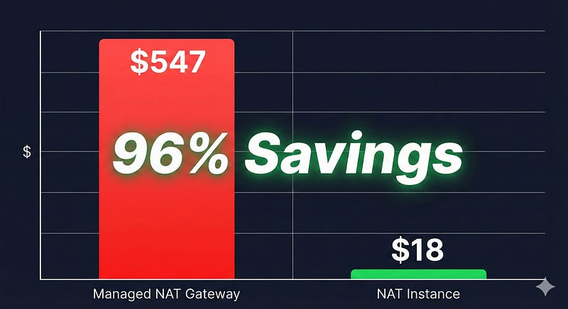
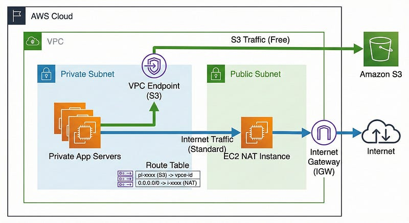
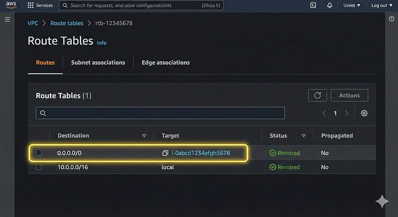

We all love the convenience of the Cloud. Click a button, and you have a database. Check a box, and your private subnets have internet access. But this convenience comes with a “Hidden Devil” that is silently eating your startup’s runway.
If you are running a VPC on AWS, you are likely using a Managed NAT Gateway. It’s the default recommendation, it’s highly available, and it requires zero maintenance.
It is also one of the most overpriced components in the entire AWS ecosystem.
I recently audited a client’s infrastructure where the NAT Gateway was costing more than their actual application servers. In this article, I will expose the hidden math of Managed NAT Gateways and show you how to replace them with a robust, cost-effective NAT Instance solution.

The Hidden Math
AWS charges you for NAT Gateways in two dimensions, and this is where they get you:
- Hourly Charge: ~$0.045 per hour per Availability Zone (AZ).
- Data Processing Charge: ~$0.045 per GB of data processed.
At first glance, this looks negligible. But let’s do the math for a moderate-traffic application handling 10 TB of monthly outbound traffic (images, external API calls, Docker image pulls, etc.) across 3 AZs.
- Hourly Cost: $0.045 * 24 * 30 * 3 ≈ $97/month
- Processing Cost: $0.045 * 10,000 GB = $450/month
- Total: $547/month
You are paying over $6,500 a year just to route traffic. And remember, this doesn’t even include the standard Data Transfer Out rates (internet egress)! You are paying a “processing tax” on every byte that flows through that gateway.
The Alternative: The Humble NAT Instance
Before AWS released Managed NAT Gateways, we used NAT Instances. These are standard EC2 instances configured to route traffic.
Why should you go back to them in 2026?
- Cheaper Compute: A
t4g.nano(ARM-based) instance costs ~$0.0042/hour. - Zero Processing Fees: You do not pay the $0.045/GB processing fee. You only pay for the instance and standard bandwidth.
- Full Control: You can run traffic shaping, filtering, or monitoring (like
tcpdump) right on the instance.
Let’s recalculate the cost for the same 10 TB scenario using t4g.micro instances (for better network baseline) in 3 AZs:
- Hourly Cost: ~$0.0084 * 24 * 30 * 3 ≈ $18/month
- Processing Cost: $0
- Total: $18/month
Savings: ~$529 per month (96% reduction). That is budget you could be spending on your AI experiments or hiring.

“But What About S3?” (The Rookie Mistake)
Before you rip out your NAT Gateway, just go and check one thing - ‘Are you even paying for S3 traffic?’
Many developers don’t realize that if your private instances talk to S3 (or DynamoDB) via a NAT Gateway, you pay the processing fee on that data.
- The Fix: Use a VPC Gateway Endpoint.
- Cost: Free.
- Result: Traffic to S3 bypasses the NAT entirely.
Even if you keep your NAT Gateway, adding a VPC Endpoint is often the easiest “quick win” optimization you can do today.
The “High Availability” Myth
The main argument against NAT Instances is that they are a Single Point of Failure (SPOF). If the instance dies, your private subnet loses internet access.
But we are engineers. We can solve this.
You don’t need a complex HA setup for most use cases. A simple Auto Scaling Group (ASG) with a minimum and maximum size of 1 is often enough. If the instance crashes, the ASG spins up a new one in less than a minute. For non-critical background jobs, this short downtime is acceptable.
Implementation Guide
Here is how you can set up a robust NAT Instance in 5 minutes.
1. The Setup
Launch an EC2 instance (Amazon Linux 2023) in your Public Subnet.
- Instance Type:
t4g.nanoort4g.micro. - Source/Dest Check: Disabled (Critical step! Go to EC2 > Networking > Change Source/Dest. Check).
- Security Group: Allow Inbound
All Trafficfrom your VPC CIDR.
2. The Configuration Script
Use the following User Data script to configure iptables automatically on boot. This ensures that even if the instance is replaced by the ASG, the new one configures itself immediately.
#!/bin/bash
# Enable IP Forwarding
echo "net.ipv4.ip_forward = 1" >> /etc/sysctl.d/custom-ip-forwarding.conf
sysctl -p /etc/sysctl.d/custom-ip-forwarding.conf
# Install iptables services
yum install -y iptables-services
# Configure Masquerading (NAT)
# Note: 'ens5' is the default interface for Nitro instances (like t4g)
iptables -t nat -A POSTROUTING -o ens5 -j MASQUERADE
service iptables save
systemctl enable iptables
systemctl start iptables3. Update Route Tables
Go to your Private Subnet route tables and point the 0.0.0.0/0 route to your new NAT Instance ID (specifically the Network Interface) instead of the NAT Gateway ID.

When Should You Keep the Managed Gateway?
I am not saying Managed NAT Gateways are useless. They are excellent if:
- Compliance: You have strict requirements that forbid self-managed network appliances.
- Five 9s: You require 99.999% availability with zero downtime for outgoing connections.
- Team Size: Your team is too small to manage any EC2 instances.
But for 90% of startups and mid-sized companies, the premium you pay for “managed” is simply not worth it.
Conclusion
Cloud cost optimization isn’t just about reserving instances or spotting unused resources. It’s about questioning the defaults. AWS defaults often prioritize their revenue and your convenience over your budget.
By spending 30 minutes setting up a NAT Instance strategy, you can save thousands of dollars annually. Stop burning money on “Processing Fees.” Take control of your network.